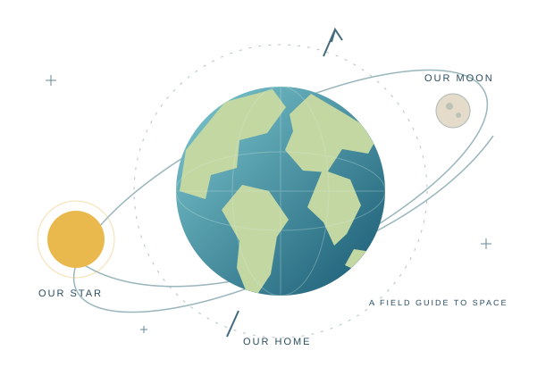

Key words / 中文詞彙
YOUR TURN
TEACHING DESK
THE REVISION COLLECTION / TOPIC 07
Follow the daylight. Meet our neighbours.
Make sense of the space we call home.
100 multiple choice · 50 fill in the blanks · Your own pace

YOUR FIELD GUIDE
Both are optional. You can stop automatic advance with “Stay here”. Teacher shortcuts: Ctrl+Alt+T (notes), Ctrl+Alt+B (board), Ctrl+Alt+R (reset).
YOUR TURN
TEACHING DESK
A MOMENT TO PAUSE